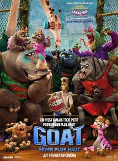

Portfolio Website
A fully responsive personal portfolio featuring both light and dark modes, showcasing projects, technical skills, and contact information with clean, modern design.
Hello, I'm
I build clean, responsive websites and simple web apps with a love for modern design.
Let's connect
I am a passionate web developer with a strong interest in front-end design and user experience. I enjoy learning new technologies and building projects that solve real problems.
As a dedicated developer, I specialize in building clean, responsive, and user-friendly websites using modern web technologies. I'm committed to continuous learning, exploring innovative solutions, and tackling challenges that help me grow professionally. My goal is to create digital experiences that are both functional and visually appealing while expanding my expertise in web development.
Early in my web development journey, I bring curiosity, creativity, and a strong work ethic to every project. I'm eager to collaborate and contribute to meaningful work.
A fully responsive personal portfolio featuring both light and dark modes, showcasing projects, technical skills, and contact information with clean, modern design.
A sleek landing page designed to showcase a curated collection of movies and TV shows with an intuitive, user-friendly interface and responsive layout.
Interested in collaborating or want to say hello? Reach out through the links below.